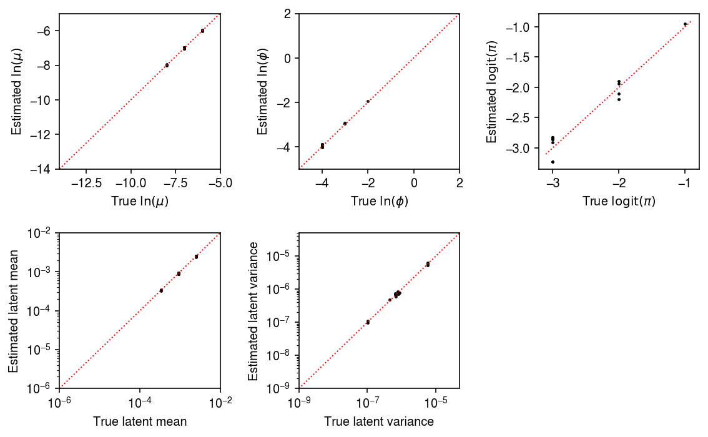
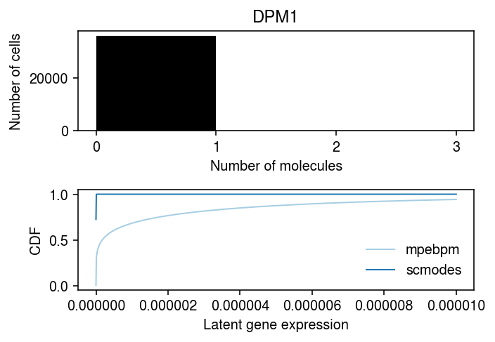

Massively Parallel Empirical Bayes Poisson Means
Table of Contents
Introduction
The Empirical Bayes Poisson Means (EBPM) problem is \( \DeclareMathOperator\Gam{Gamma} \DeclareMathOperator\Poi{Poisson} \DeclareMathOperator\argmin{arg min} \newcommand\mf{\mathbf{F}} \newcommand\ml{\mathbf{L}} \newcommand\mx{\mathbf{X}} \newcommand\vl{\mathbf{l}} \newcommand\vx{\mathbf{x}} \)
\begin{align*} x_i \mid s_i, \lambda_i &\sim \Poi(s_i \lambda_i)\\ \lambda_i &\sim g(\cdot) \in \mathcal{G}, \end{align*}where the (primary) inference goal is to estimate \(g\) by maximizing the likelihood. In our prior work (Sarkar et al. 2019), we used this approach to estimate the mean and variance of gene expression from scRNA-seq data collected on a homogeneous sample of cells from each of a number of donor individuals, where we assumed \(\mathcal{G}\) was the family of point-Gamma distributions. This procedure removes the effect of variation introduced by the measurement process, leaving the variation in true gene expression levels which are of interest (Sarkar and Stephens 2020). In total, we solved 537,678 EBPM problems in parallel by formulating them as a single factor model
\begin{align*} x_{ij} \mid x_{i+}, \lambda_{ij} &\sim \Poi(x_{i+} \lambda_{ij})\\ \lambda_{ij} \mid \mu_{ij}, \phi_{ij}, \pi_{ij} &\sim \pi_{ij} \delta_0(\cdot) + (1 - \pi_{ij}) \Gam(\phi_{ij}^{-1}, \mu_{ij}^{-1} \phi_{ij}^{-1})\\ \ln \mu_{ij} &= (\ml \mf_\mu')_{ij}\\ \ln \phi_{ij} &= (\ml \mf_\phi')_{ij}\\ \operatorname{logit} \pi_{ij} &= (\ml \mf_\pi')_{ij}, \end{align*}where
- \(x_{ij}\) is the number of molecules of gene \(j = 1, \ldots, p\) observed in cell \(i = 1, \ldots, n\)
- \(x_{i+} \triangleq \sum_j x_{ij}\) is the total number of molecules observed in sample \(i\)
- cells are taken from \(m\) donor individuals, \(\ml\) is \(n \times m\), and each \(\mf_{(\cdot)}\) is \(p \times m\)
- assignments of cells to donors (loadings) \(l_{ik} \in \{0, 1\}, k = 1, \ldots, m\) are known and fixed.
We previously implemented maximum likelihood inference of this model via batch gradient descent in the Python package scqtl. We have now developed a new Python package mpebpm, which scales to much larger data sets. The key improvements are optimization using minibatch gradient descent and support for sparse matrices. Here, we evaluate the method on simulations and large biological data sets.
Setup
Submitted batch job 1331143
import anndata import loompy import mpebpm import numpy as np import os import pandas as pd import scipy.sparse as ss import scipy.special as sp import scipy.stats as st import scmodes import scqtl import time
%matplotlib inline %config InlineBackend.figure_formats = set(['retina'])
import matplotlib.pyplot as plt plt.rcParams['figure.facecolor'] = 'w' plt.rcParams['font.family'] = 'Nimbus Sans'
srun --pty --partition=mstephens bash source activate singlecell tensorboard --host=$(hostname -i) --logdir=runs &
Results
Accuracy of parameter estimation
We previously evaluated scqtl
by
simulating data from the model.
def evaluate(num_samples, num_mols, num_trials=10, **kwargs): # Important: generate all of the samples for each trial in one shot, and use # one-hot encoding to get separate estimates args = [(num_samples * num_trials, num_mols, log_mu, log_phi, logodds, None, None, None) for log_mu in np.linspace(-12, -6, 7) for log_phi in np.linspace(-4, 0, 5) for logodds in np.linspace(-3, 3, 7)] x = np.concatenate([scqtl.simulation.simulate(*a)[0][:,:1] for a in args], axis=1) x = ss.csr_matrix(x) s = num_mols * np.ones((x.shape[0], 1)) onehot = np.zeros((num_samples * num_trials, num_trials)) onehot[np.arange(onehot.shape[0]), np.arange(onehot.shape[0]) // num_samples] = 1 onehot = ss.csr_matrix(onehot) log_mu, neg_log_phi, logodds = mpebpm.sgd.ebpm_point_gamma(x, s=s, onehot=onehot, **kwargs) result = pd.DataFrame( [(a[0] // num_trials, int(a[1]), int(a[2]), int(a[3]), int(a[4]), a[-1], trial) for a in args for trial in range(num_trials)], columns=['num_samples', 'num_mols', 'log_mu', 'log_phi', 'logodds', 'fold', 'trial']) result['mean'] = np.exp(result['log_mu']) result['var'] = (1 - sp.expit(result['logodds'])) * np.exp(2 * result['log_mu'] + result['log_phi']) + sp.expit(-result['logodds']) * (1 - sp.expit(result['logodds'])) * np.exp(2 * result['log_mu']) result['log_mu_hat'] = log_mu.ravel(order='F') result['log_phi_hat'] = -neg_log_phi.ravel(order='F') result['logodds_hat'] = logodds.ravel(order='F') result['mean_hat'] = np.exp(result['log_mu_hat']) result['var_hat'] = (1 - sp.expit(result['logodds_hat'])) * np.exp(2 * result['log_mu_hat'] + result['log_phi_hat']) + sp.expit(-result['logodds_hat']) * (1 - sp.expit(result['logodds_hat'])) * np.exp(2 * result['log_mu_hat']) diagnostic = [] for i in range(x.shape[1]): for j in range(onehot.shape[1]): idx = onehot.A[:,j].astype(bool) diagnostic.append(scqtl.diagnostic.diagnostic_test( x.A[idx,i].reshape(-1, 1), log_mu[j,i], -neg_log_phi[j,i], -logodds[j,i], num_mols, np.ones((num_samples, 1)))) diagnostic = np.array(diagnostic) result['ks_d'] = diagnostic[:,0] result['ks_p'] = diagnostic[:,1] return result
Run the simulation.
result = [evaluate(num_samples=num_samples, num_mols=int(1e5), batch_size=32, num_epochs=num_epochs, log_dir=f'runs/mpebpm/sim-{num_samples}/') # Important: for fixed batch size, having more samples means more # updates to each parameter per epoch for num_samples, num_epochs in zip((100, 1000), (200, 20))] pd.concat(result).to_csv('/scratch/midway2/aksarkar/ideas/mpebpm-sim.txt.gz', sep='\t')
Read the results.
result = pd.read_csv('/scratch/midway2/aksarkar/ideas/mpebpm-sim.txt.gz', sep='\t', index_col=0)
Plot the estimated values against the ground truth values.
samples_pass = result['num_samples'] == 100 mu_pass = result['log_mu'] > -10 pi_pass = result['logodds'] < 0 plt.clf() fig, ax = plt.subplots(2, 3) fig.set_size_inches(8, 5) subset = result.loc[np.logical_and(pi_pass, samples_pass)] ax[0, 0].scatter(subset['log_mu'], subset['log_mu_hat'], s=2, c='k') ax[0, 0].set_xlim(-14, -5) ax[0, 0].set_ylim(ax[0, 0].get_xlim()) ax[0, 0].plot(ax[0, 0].get_xlim(), ax[0, 0].get_xlim(), c='r', ls=':', lw=1) ax[0, 0].set_xlabel('True $\ln(\mu)$') ax[0, 0].set_ylabel('Estimated $\ln(\mu)$') ax[1, 0].set_xscale('log') ax[1, 0].set_yscale('log') ax[1, 0].scatter(subset['mean'], subset['mean_hat'], s=2, c='k') ax[1, 0].set_xlim(1e-6, 1e-2) ax[1, 0].set_ylim(ax[1, 0].get_xlim()) ax[1, 0].plot(ax[1, 0].get_xlim(), ax[1, 0].get_xlim(), c='r', ls=':', lw=1) ax[1, 0].set_xlabel('True latent mean') ax[1, 0].set_ylabel('Estimated latent mean') subset = result.loc[np.logical_and.reduce(np.vstack([samples_pass, mu_pass, pi_pass]))] ax[0, 1].scatter(subset['log_phi'], subset['log_phi_hat'], s=2, c='k') ax[0, 1].set_xlim(-5, 2) ax[0, 1].set_ylim(ax[0, 1].get_xlim()) ax[0, 1].plot(ax[0, 1].get_xlim(), ax[0, 1].get_xlim(), c='r', ls=':', lw=1) ax[0, 1].set_xlabel('True $\ln(\phi)$') ax[0, 1].set_ylabel('Estimated $\ln(\phi)$') ax[1, 1].set_xscale('log') ax[1, 1].set_yscale('log') ax[1, 1].scatter(subset['var'], subset['var_hat'], s=2, c='k') ax[1, 1].set_xlim(1e-9, 5e-5) ax[1, 1].set_ylim(ax[1, 1].get_xlim()) ax[1, 1].plot(ax[1, 1].get_xlim(), ax[1, 1].get_xlim(), c='r', ls=':', lw=1) ax[1, 1].set_xlabel('True latent variance') ax[1, 1].set_ylabel('Estimated latent variance') subset = result.loc[np.logical_and(pi_pass, samples_pass)] ax[0, 2].scatter(subset['logodds'], subset['logodds_hat'], s=2, c='k') ax[0, 2].plot(ax[0, 2].get_xlim(), ax[0, 2].get_xlim(), c='r', ls=':', lw=1) ax[0, 2].set_xlabel('True $\mathrm{logit}(\pi)$') ax[0, 2].set_ylabel('Estimated $\mathrm{logit}(\pi)$') ax[1, 2].set_axis_off() fig.tight_layout()
samples_pass = result['num_samples'] == 1000 mu_pass = result['log_mu'] > -10 pi_pass = result['logodds'] < 0 plt.clf() fig, ax = plt.subplots(2, 3) fig.set_size_inches(8, 5) subset = result.loc[np.logical_and(pi_pass, samples_pass)] ax[0, 0].scatter(subset['log_mu'], subset['log_mu_hat'], s=2, c='k') ax[0, 0].set_xlim(-14, -5) ax[0, 0].set_ylim(ax[0, 0].get_xlim()) ax[0, 0].plot(ax[0, 0].get_xlim(), ax[0, 0].get_xlim(), c='r', ls=':', lw=1) ax[0, 0].set_xlabel('True $\ln(\mu)$') ax[0, 0].set_ylabel('Estimated $\ln(\mu)$') ax[1, 0].set_xscale('log') ax[1, 0].set_yscale('log') ax[1, 0].scatter(subset['mean'], subset['mean_hat'], s=2, c='k') ax[1, 0].set_xlim(1e-6, 1e-2) ax[1, 0].set_ylim(ax[1, 0].get_xlim()) ax[1, 0].plot(ax[1, 0].get_xlim(), ax[1, 0].get_xlim(), c='r', ls=':', lw=1) ax[1, 0].set_xlabel('True latent mean') ax[1, 0].set_ylabel('Estimated latent mean') subset = result.loc[np.logical_and.reduce(np.vstack([samples_pass, mu_pass, pi_pass]))] ax[0, 1].scatter(subset['log_phi'], subset['log_phi_hat'], s=2, c='k') ax[0, 1].set_xlim(-5, 2) ax[0, 1].set_ylim(ax[0, 1].get_xlim()) ax[0, 1].plot(ax[0, 1].get_xlim(), ax[0, 1].get_xlim(), c='r', ls=':', lw=1) ax[0, 1].set_xlabel('True $\ln(\phi)$') ax[0, 1].set_ylabel('Estimated $\ln(\phi)$') ax[1, 1].set_xscale('log') ax[1, 1].set_yscale('log') ax[1, 1].scatter(subset['var'], subset['var_hat'], s=2, c='k') ax[1, 1].set_xlim(1e-9, 5e-5) ax[1, 1].set_ylim(ax[1, 1].get_xlim()) ax[1, 1].plot(ax[1, 1].get_xlim(), ax[1, 1].get_xlim(), c='r', ls=':', lw=1) ax[1, 1].set_xlabel('True latent variance') ax[1, 1].set_ylabel('Estimated latent variance') subset = result.loc[np.logical_and(pi_pass, samples_pass)] ax[0, 2].scatter(subset['logodds'], subset['logodds_hat'], s=2, c='k') ax[0, 2].plot(ax[0, 2].get_xlim(), ax[0, 2].get_xlim(), c='r', ls=':', lw=1) ax[0, 2].set_xlabel('True $\mathrm{logit}(\pi)$') ax[0, 2].set_ylabel('Estimated $\mathrm{logit}(\pi)$') ax[1, 2].set_axis_off() fig.tight_layout()
Goodness of fit
We previously developed a test for goodness of fit, based on the fact that if \(x_{ij} \sim F_{ij}\), then \(F_{ij}(x_{ij}) \sim \operatorname{Uniform}(0, 1)\). We applied this test to the distributions estimated from the simulated data sets. Plot the histogram of goodness-of-fit \(p\)-values.
plt.clf() plt.gcf().set_size_inches(2, 2) plt.hist(result.loc[result['num_samples'] == 100, 'ks_p'], bins=np.linspace(0, 1, 11), density=True, color='0.7') plt.axhline(y=1, lw=1, ls=':', c='k') plt.xlim(0, 1) plt.xlabel('$p$-value') plt.ylabel('Density') plt.tight_layout()

plt.clf() plt.gcf().set_size_inches(2, 2) plt.hist(result.loc[result['num_samples'] == 1000, 'ks_p'], bins=np.linspace(0, 1, 11), density=True, color='0.7') plt.axhline(y=1, lw=1, ls=':', c='k') plt.xlim(0, 1) plt.xlabel('$p$-value') plt.ylabel('Density') plt.tight_layout()
Report the number (proportion) of simulation trials where the observed data significantly depart from the estimated distribution (\(p < 0.05\) after Bonferroni correction).
sig = result.groupby('num_samples').apply(lambda x: x.loc[x['ks_p'] < 0.05 / x.shape[0]]).reset_index(drop=True) sig.groupby('num_samples')['ks_p'].agg(len)
num_samples 1000 21.0 Name: ks_p, dtype: float64
Plot the estimated and ground truth parameters for trials where the data departed from the estimated distribution.
samples_pass = sig['num_samples'] == 1000 mu_pass = sig['log_mu'] > -10 pi_pass = sig['logodds'] < 0 plt.clf() fig, ax = plt.subplots(2, 3) fig.set_size_inches(8, 5) subset = sig.loc[np.logical_and(pi_pass, samples_pass)] ax[0, 0].scatter(subset['log_mu'], subset['log_mu_hat'], s=2, c='k') ax[0, 0].set_xlim(-14, -5) ax[0, 0].set_ylim(ax[0, 0].get_xlim()) ax[0, 0].plot(ax[0, 0].get_xlim(), ax[0, 0].get_xlim(), c='r', ls=':', lw=1) ax[0, 0].set_xlabel('True $\ln(\mu)$') ax[0, 0].set_ylabel('Estimated $\ln(\mu)$') ax[1, 0].set_xscale('log') ax[1, 0].set_yscale('log') ax[1, 0].scatter(subset['mean'], subset['mean_hat'], s=2, c='k') ax[1, 0].set_xlim(1e-6, 1e-2) ax[1, 0].set_ylim(ax[1, 0].get_xlim()) ax[1, 0].plot(ax[1, 0].get_xlim(), ax[1, 0].get_xlim(), c='r', ls=':', lw=1) ax[1, 0].set_xlabel('True latent mean') ax[1, 0].set_ylabel('Estimated latent mean') subset = sig.loc[np.logical_and.reduce(np.vstack([samples_pass, mu_pass, pi_pass]))] ax[0, 1].scatter(subset['log_phi'], subset['log_phi_hat'], s=2, c='k') ax[0, 1].set_xlim(-5, 2) ax[0, 1].set_ylim(ax[0, 1].get_xlim()) ax[0, 1].plot(ax[0, 1].get_xlim(), ax[0, 1].get_xlim(), c='r', ls=':', lw=1) ax[0, 1].set_xlabel('True $\ln(\phi)$') ax[0, 1].set_ylabel('Estimated $\ln(\phi)$') ax[1, 1].set_xscale('log') ax[1, 1].set_yscale('log') ax[1, 1].scatter(subset['var'], subset['var_hat'], s=2, c='k') ax[1, 1].set_xlim(1e-9, 5e-5) ax[1, 1].set_ylim(ax[1, 1].get_xlim()) ax[1, 1].plot(ax[1, 1].get_xlim(), ax[1, 1].get_xlim(), c='r', ls=':', lw=1) ax[1, 1].set_xlabel('True latent variance') ax[1, 1].set_ylabel('Estimated latent variance') subset = sig.loc[np.logical_and(pi_pass, samples_pass)] ax[0, 2].scatter(subset['logodds'], subset['logodds_hat'], s=2, c='k') ax[0, 2].plot(ax[0, 2].get_xlim(), ax[0, 2].get_xlim(), c='r', ls=':', lw=1) ax[0, 2].set_xlabel('True $\mathrm{logit}(\pi)$') ax[0, 2].set_ylabel('Estimated $\mathrm{logit}(\pi)$') ax[1, 2].set_axis_off() fig.tight_layout()

Application to iPSCs
We previously generated scRNA-seq of 5,597 cells from 54 donors (Sarkar et al. 2019). Read the data, and remove the donor with evidence of contamination.
x = anndata.read_h5ad('/project2/mstephens/aksarkar/projects/singlecell-ideas/data/ipsc/ipsc.h5ad') x = x[x.obs.chip_id != 'NA18498'] x.X
<5578x9957 sparse matrix of type '<class 'numpy.float32'>' with 39529537 stored elements in Compressed Sparse Row format>
Prepare the data.
# Important: the dense data will fit on the GPU y = x.X.A s = x.obs['mol_hs'].values.reshape(-1, 1) # Important: constructing this as a dense matrix will blow up memory for larger # data sets onehot = ss.coo_matrix((np.ones(x.shape[0]), (np.arange(x.shape[0]), pd.Categorical(x.obs['chip_id']).codes))).tocsr() # Important: center the matrix of dummy variables (batch), because there is no # baseline design = ss.coo_matrix(pd.get_dummies(x.obs['experiment'])).astype(float).A design -= design.mean(axis=0)
Fit mpebpm (41 s to initialize; 39 s to fit).
trial = 5 num_epochs = 40 batch_size = 64 lr = 1e-2 res1 = mpebpm.sgd.ebpm_gamma( y, s=s, onehot=onehot, batch_size=batch_size, shuffle=True, lr=lr, num_epochs=num_epochs, log_dir=f'runs/mpebpm/ipsc{trial}/init/') log_mu, neg_log_phi, logodds = mpebpm.sgd.ebpm_point_gamma( y, s=s, onehot=onehot, init=res1, batch_size=batch_size, shuffle=True, lr=lr, num_epochs=num_epochs, log_dir=f'runs/mpebpm/ipsc{trial}/fit/')
Estimate log likelihood for each observation under Gamma and point-Gamma expression models.
mean = s.ravel() * onehot @ np.exp(res1[0]) inv_disp = onehot @ np.exp(res1[1]) nb_llik = (y * np.log(mean / inv_disp) - y * np.log(1 + mean / inv_disp) - inv_disp * np.log(1 + mean / inv_disp) + sp.gammaln(y + inv_disp) - sp.gammaln(inv_disp) - sp.gammaln(y + 1)) mean = s.ravel() * onehot @ np.exp(log_mu) inv_disp = onehot @ np.exp(neg_log_phi) temp = (y * np.log(mean / inv_disp) - y * np.log(1 + mean / inv_disp) - inv_disp * np.log(1 + mean / inv_disp) + sp.gammaln(y + inv_disp) - sp.gammaln(inv_disp) - sp.gammaln(y + 1)) case_zero = -np.log1p(np.exp(onehot @ -logodds)) + np.log1p(np.exp(temp - (onehot @ logodds))) case_non_zero = -np.log1p(np.exp(onehot @ logodds)) + temp zinb_llik = np.where(y < 1, case_zero, case_non_zero)
Take the best model for each donor/gene combination, then evaluate the full data log likelihood.
L = np.tensordot(onehot.T.A, np.stack([nb_llik, zinb_llik], axis=-1), 1) L.max(axis=-1).sum() / np.prod(y.shape)
-51.14861191512254
Evaluate the proportion of times each model was the best fit for donor/gene combinations.
pd.Series({k: v for k, v in zip(
['gamma', 'point_gamma'],
np.histogram(L.argmax(axis=-1), bins=np.arange(3))[0])}) / np.prod(L.shape[:2])
gamma 0.311343 point_gamma 0.688657 dtype: float64
Test each individual-gene combination for goodness-of-fit to the
mpebpm-estimated distribution.
result = dict() for j in range(x.shape[1]): for k, donor in enumerate(pd.Categorical(x.obs['chip_id']).categories): idx = onehot[:,k].A.ravel().astype(bool) size = s[idx].ravel() if L[k,j,0] > L[k,j,1]: d, p = scmodes.benchmark.gof._gof( y[idx,j], cdf=scmodes.benchmark.gof._zig_cdf, pmf=scmodes.benchmark.gof._zig_pmf, size=size, log_mu=res1[0][k,j], log_phi=-res1[1][k,j]) else: d, p = scmodes.benchmark.gof._gof( y[idx,j], cdf=scmodes.benchmark.gof._zig_cdf, pmf=scmodes.benchmark.gof._zig_pmf, size=size, log_mu=log_mu[k,j], log_phi=-neg_log_phi[k,j], logodds=logodds[k,j]) result[(donor, x.var.iloc[j].name)] = pd.Series({'stat': d, 'p': p}) result = pd.DataFrame.from_dict(result, orient='index') result.index.names = ['donor', 'gene'] result = result.reset_index()
Write out the GOF tests.
result.to_csv('/scratch/midway2/aksarkar/ideas/mpebpm-ipsc-gof.txt.gz', sep='\t')
Plot the histogram of GOF \(p\)-values.
plt.clf() plt.gcf().set_size_inches(2, 2) plt.hist(result['p'], bins=np.linspace(0, 1, 11), color='0.7', density=True) plt.axhline(y=1, lw=1, ls=':', c='k') plt.xlim(0, 1) plt.xlabel('$p$-value') plt.ylabel('Density') plt.tight_layout()

Report how many individual-gene combinations (proportion) depart significantly from the estimated distribution.
sig = result.loc[result['p'] < 0.05 / result.shape[0]] sig.shape[0], sig.shape[0] / result.shape[0]
(65, 0.000123171145359006)
Look at one of the examples where the data depart from the estimated distribution.
plt.clf() fig, ax = plt.subplots(2, 1) fig.set_size_inches(6, 4) query = x[x.obs['chip_id'] == sig.iloc[0]['donor'], x.var.index == sig.iloc[0]['gene']].X.A.ravel() ax[0].hist(query, bins=np.arange(query.max() + 1), color='k') ax[0].set_xlabel('Number of molecules') ax[0].set_ylabel('Number of cells') ax[0].set_title(x.var.loc[sig.iloc[0]['gene'], 'name']) grid = np.linspace(0, 1e-3, 1000) j = list(x.var.index).index(sig.iloc[0]['gene']) k = list(pd.Categorical(x.obs['chip_id']).categories).index(sig.iloc[0]['donor']) ax[1].plot(grid, st.gamma(a=np.exp(neg_log_phi[k,j]), scale=np.exp(log_mu[k,j] - neg_log_phi[k,j])).cdf(grid), c='k', lw=1) ax[1].set_xlabel('Latent gene expression') ax[1].set_ylabel('CDF') fig.tight_layout()

Report all genes at which the data depart from the estimated distribution for at least one individual.
x.var.merge(sig, left_index=True, right_on='gene', how='inner')['name'].unique()
array(['NUP98', 'B4GALT5', 'ANXA5', 'RHOG', 'MT-CO2', 'MT-CYB', 'MT-ND2', 'MT-ND4', 'MT-ATP6', 'MT-CO3', 'MT-ND4L'], dtype=object)
Confounder correction in iPSC data
Repeat the analysis, including C1 chip as a covariate (1.4 minutes init, 1.35 minutes fit).
num_epochs = 80 init = mpebpm.sgd.ebpm_gamma( y, s=s, onehot=onehot, design=design, batch_size=64, lr=1e-2, num_epochs=num_epochs, log_dir='runs/mpebpm/ipsc/design2/init') log_mu1, neg_log_phi1, logodds1, bhat1 = mpebpm.sgd.ebpm_point_gamma( y, s=s, init=init[:-1], onehot=onehot, design=design, batch_size=64, lr=1e-2, num_epochs=num_epochs, log_dir='runs/mpebpm/ipsc/design2/fit') np.save('/scratch/midway2/aksarkar/ideas/mpebpm-ipsc-design-log-mu', log_mu1) np.save('/scratch/midway2/aksarkar/ideas/mpebpm-ipsc-design-neg-log-phi', neg_log_phi1) np.save('/scratch/midway2/aksarkar/ideas/mpebpm-ipsc-design-logodds', logodds1) np.save('/scratch/midway2/aksarkar/ideas/mpebpm-ipsc-design-bhat', bhat1)
Read the mpebpm and scqtl estimates.
log_mu1 = np.load('/scratch/midway2/aksarkar/ideas/mpebpm-ipsc-design-log-mu.npy') neg_log_phi1 = np.load('/scratch/midway2/aksarkar/ideas/mpebpm-ipsc-design-neg-log-phi.npy') logodds1 = np.load('/scratch/midway2/aksarkar/ideas/mpebpm-ipsc-design-logodds.npy') bhat1 = np.load('/scratch/midway2/aksarkar/ideas/mpebpm-ipsc-design-bhat.npy') log_mu2 = pd.read_table('/project2/mstephens/aksarkar/projects/singlecell-qtl/data/density-estimation/design1/zi2-log-mu.txt.gz', index_col=0, sep=' ') log_phi2 = pd.read_table('/project2/mstephens/aksarkar/projects/singlecell-qtl/data/density-estimation/design1/zi2-log-phi.txt.gz', index_col=0, sep=' ') logodds2 = pd.read_table('/project2/mstephens/aksarkar/projects/singlecell-qtl/data/density-estimation/design1/zi2-logodds.txt.gz', index_col=0, sep=' ') bhat2 = pd.read_table('/project2/mstephens/aksarkar/projects/singlecell-qtl/data/density-estimation/design1/beta.txt.gz', index_col=0, sep=' ')
Compare the mpebpm estimates with and without correcting for batch.
plt.clf() fig, ax = plt.subplots(1, 3) fig.set_size_inches(7, 2.5) ax[0].scatter(log_mu.ravel(), log_mu1.ravel(), s=1, c='k', alpha=0.1) ax[0].set_xlim(ax[0].get_ylim()) ax[0].plot(ax[0].get_xlim(), ax[0].get_ylim(), lw=1, ls=':', c='r') ax[0].set_xlabel('Est $\log(\mu)$') ax[0].set_ylabel('Corrected est $\log(\mu)$') ax[1].scatter(-neg_log_phi.ravel(), -neg_log_phi1.ravel(), s=1, c='k', alpha=0.1) ax[1].set_xlim(ax[1].get_ylim()) ax[1].plot(ax[1].get_xlim(), ax[1].get_ylim(), lw=1, ls=':', c='r') ax[1].set_xlabel('Est $\log(\phi)$') ax[1].set_ylabel('Corrected est $\log(\phi)$') ax[2].scatter(logodds.ravel(), logodds1.ravel(), s=1, c='k', alpha=0.1) ax[2].set_xlim(ax[2].get_ylim()) ax[2].plot(ax[2].get_xlim(), ax[2].get_ylim(), lw=1, ls=':', c='r') ax[2].set_xlabel('Est $\mathrm{logit}(\pi)$') ax[2].set_ylabel('Corrected est $\mathrm{logit}(\pi)$') fig.tight_layout()

Compare the mpebpm estimated mean latent gene expression against the
scqtl estimate.
mean1 = -np.log1p(np.exp(logodds1)) + log_mu1 mean2 = -np.log1p(np.exp(logodds2)) + log_mu2 del mean2['NA18498']
plt.clf() plt.gcf().set_size_inches(2.5, 2.5) plt.scatter(mean1.ravel(), mean2.values.ravel(order='F'), c='k', s=1, alpha=0.1) plt.xlim(plt.ylim()) plt.plot(plt.xlim(), plt.ylim(), lw=1, ls=':', c='r') plt.xlabel('mpebpm log latent mean') plt.ylabel('scqtl log latent mean') plt.tight_layout()
Variance within versus between individuals in iPSC data
Read the estimated parameters.
log_mu1 = np.load('/scratch/midway2/aksarkar/ideas/mpebpm-ipsc-design-log-mu.npy') neg_log_phi1 = np.load('/scratch/midway2/aksarkar/ideas/mpebpm-ipsc-design-neg-log-phi.npy') logodds1 = np.load('/scratch/midway2/aksarkar/ideas/mpebpm-ipsc-design-logodds.npy') bhat1 = np.load('/scratch/midway2/aksarkar/ideas/mpebpm-ipsc-design-bhat.npy')
Estimate the latent mean and variance of gene expression for each individual, for each gene.
log_mean = -np.log1p(np.exp(-logodds1)) + log_mu1 # V[lam] = (1 - pi) mu^2 phi + pi (1 - pi) mu^2 # log(x + y) = log(x) + softplus(log y - log x) # log(sigmoid(x)) = -softplus(-x) a = -np.log1p(np.exp(-logodds1)) + 2 * log_mu1 - neg_log_phi1 b = -np.log1p(np.exp(-logodds1)) - np.log1p(np.exp(logodds1)) + 2 * log_mu1 log_var = a + np.log1p(np.exp(b - a))
Plot the relationship between variance between individuals (sample variance of latent mean gene expression values), and: (1) average gene expression, and (2) average variance of latent gene expression within an individual.
plt.clf() fig, ax = plt.subplots(1, 2, sharey=True) fig.set_size_inches(4.5, 2.5) for a in ax.ravel(): a.set_xscale('log') a.set_yscale('log') a.set_aspect('equal', adjustable='datalim') ax[0].scatter(np.exp(log_mean).mean(axis=0), np.exp(log_mean).var(axis=0), c='k', s=1,alpha=0.2) ax[0].set_xlabel('Mean latent gene expression') ax[0].set_ylabel('Between individual variance\nlatent gene expression') ax[1].scatter(np.exp(log_var).mean(axis=0), np.exp(log_mean).var(axis=0), c='k', s=1,alpha=0.2) ax[1].set_xlabel('Within individual variance\nlatent gene expression') fig.tight_layout()
The distribution of variance between individuals appears to be bimodal. Look at the genes in the lower mode.
query = np.exp(log_mean).var(axis=0) < 1e-20 temp = x.var.loc[query].copy() temp['mean'] = np.exp(log_mean).mean(axis=0)[query] print(temp.sort_values('mean', ascending=False).head(n=20).to_html(classes='table'))
| chr | start | end | name | strand | source | mean | |
|---|---|---|---|---|---|---|---|
| index | |||||||
| ENSG00000198886 | hsMT | 10760 | 12137 | MT-ND4 | + | H. sapiens | 2.657278e-10 |
| ENSG00000198727 | hsMT | 14747 | 15887 | MT-CYB | + | H. sapiens | 2.137406e-10 |
| ENSG00000198899 | hsMT | 8527 | 9207 | MT-ATP6 | + | H. sapiens | 1.966070e-10 |
| ENSG00000198938 | hsMT | 9207 | 9990 | MT-CO3 | + | H. sapiens | 1.633298e-10 |
| ENSG00000198712 | hsMT | 7586 | 8269 | MT-CO2 | + | H. sapiens | 1.565673e-10 |
| ENSG00000087086 | hs19 | 49468558 | 49470135 | FTL | + | H. sapiens | 1.232170e-10 |
| ENSG00000111640 | hs12 | 6643093 | 6647537 | GAPDH | + | H. sapiens | 1.212971e-10 |
| ENSG00000198763 | hsMT | 4470 | 5511 | MT-ND2 | + | H. sapiens | 1.182991e-10 |
| ENSG00000075624 | hs7 | 5566782 | 5603415 | ACTB | - | H. sapiens | 1.138831e-10 |
| ENSG00000164587 | hs5 | 149822753 | 149829319 | RPS14 | - | H. sapiens | 1.133044e-10 |
| ENSG00000084207 | hs11 | 67351066 | 67354131 | GSTP1 | + | H. sapiens | 1.117254e-10 |
| ENSG00000181163 | hs5 | 170814120 | 170838141 | NPM1 | + | H. sapiens | 1.109008e-10 |
| ENSG00000228253 | hsMT | 8366 | 8572 | MT-ATP8 | + | H. sapiens | 1.093323e-10 |
| ENSG00000137818 | hs15 | 69745123 | 69748255 | RPLP1 | + | H. sapiens | 1.091205e-10 |
| ENSG00000231500 | hs6 | 33239787 | 33244287 | RPS18 | + | H. sapiens | 1.037726e-10 |
| ENSG00000198804 | hsMT | 5904 | 7445 | MT-CO1 | + | H. sapiens | 1.030106e-10 |
| ENSG00000105372 | hs19 | 42363988 | 42376994 | RPS19 | + | H. sapiens | 1.018074e-10 |
| ENSG00000149273 | hs11 | 75110530 | 75133324 | RPS3 | + | H. sapiens | 9.832752e-11 |
| ENSG00000197061 | hs6 | 26104104 | 26104518 | HIST1H4C | + | H. sapiens | 9.703387e-11 |
| ENSG00000177954 | hs1 | 153963235 | 153964626 | RPS27 | + | H. sapiens | 9.048103e-11 |
Application to Census of Immune Cells
The Census of Immune Cells is part of the Human Cell Atlas. Currently, it comprises scRNA-seq data of 593,844 cells from 16 donors. The cells vary in donor sex, donor ancestry, tissue of origin, as well as (latent) cell types/subtypes/states within each donor.
with loompy.connect('/project2/mstephens/aksarkar/projects/singlecell-ideas/data/human-cell-atlas/immune-cell-census.loom') as con: metadata = pd.DataFrame(np.hstack([ con.ca['derived_organ_parts_label', 'donor_organism.human_specific.ethnicity.ontology_label'], con.ca['donor_organism.provenance.document_id', 'donor_organism.sex']])) print(metadata.groupby([0,3,1,2]).agg(len).to_frame().to_html(classes='table'))
| 0 | ||||
|---|---|---|---|---|
| 0 | 3 | 1 | 2 | |
| bone marrow | female | European | 085e737d-adb5-4597-bd54-5ebeda170038 | 49716 |
| af7fe7a6-7d7e-4cdf-9799-909680fa9a3f | 44584 | |||
| cf514c66-88b2-45e4-a397-7fb362ae9950 | 48630 | |||
| fb30bb83-0278-4117-bd42-e2e8dddfedfe | 49839 | |||
| male | African American | d23515a7-e182-4bc6-89e2-b1635885c0ec | 51239 | |
| eb8fb36b-6e02-41c4-8760-3eabbde6bacb | 51024 | |||
| European | 0a6c46dd-0905-4581-95eb-d89eef8a7213 | 47167 | ||
| 9aaf8a07-924f-456c-86dc-82f5da718246 | 48784 | |||
| umbilical cord blood | female | Asian | e4b5115d-3a0d-4c50-aba4-04b5f76810da | 57893 |
| European | 4a404c91-0dbf-4246-bc23-d13aff961ba7 | 45078 | ||
| 509c507c-4759-452f-994e-d134d90329fd | 39584 | |||
| male | African American | 0b91cb1f-e2a8-413a-836c-1d38e7af3f2d | 54544 | |
| European | 53af872d-b838-44d6-ae1b-25b56405483c | 62609 | ||
| 6072d1f5-aa0c-4ab1-a8a6-a00ab479a1ba | 52142 | |||
| nan | 31f89559-2682-4bbc-84c6-826dfe4a4e39 | 29455 | ||
| 4e98f612-15ec-44ab-b5f9-39787f92b01a | 50571 |
To demonstrate the scalability of mpebpm, fit a point-Gamma distribution
to each gene in each donor, resulting in 254,432 EBPM problems. We
previously
pre-processed the data to npz format, which is much faster to read than
h5ad or loom.
y_csr = ss.load_npz('/scratch/midway2/aksarkar/modes/immune-cell-census.npz') genes = pd.read_csv('/scratch/midway2/aksarkar/modes/immune-cell-census-genes.txt.gz', sep='\t', index_col=0) donor = pd.read_csv('/scratch/midway2/aksarkar/modes/immune-cell-census-samples.txt.gz', sep='\t', index_col=0)['0'] onehot = ss.csr_matrix(pd.get_dummies(donor).values)
Remove genes which only have zero observations in some donor.
# Important: CSC needed to subset on columns (genes) y_csc = y_csr.tocsc() keep = (((y_csc.T @ onehot) > 0).sum(axis=1) == onehot.shape[1]).A.ravel() genes = genes.loc[keep] y_csc = y_csc[:,keep] y_csr = y_csc.tocsr() s = y_csr.sum(axis=1).A.ravel() y_csr
<593844x15902 sparse matrix of type '<class 'numpy.int32'>' with 550918891 stored elements in Compressed Sparse Row format>
Fit mpebpm (6 minutes/epoch; 33 minutes fit).
# This converges quickly init = mpebpm.sgd.ebpm_gamma( y_csr, onehot=onehot, batch_size=128, lr=1e-2, max_epochs=1, shuffle=True) log_mu, neg_log_phi, logodds = mpebpm.sgd.ebpm_point_gamma( y_csr, onehot=onehot, init=init, batch_size=128, lr=1e-2, max_epochs=5, shuffle=True, logdir='runs/mpebpm6')
pd.DataFrame(log_mu, index=donor.unique(), columns=genes['featurekey']).to_csv('/scratch/midway2/aksarkar/ideas/mpebpm-immune-census-log-mu.txt.gz', sep='\t') pd.DataFrame(neg_log_phi, index=donor.unique(), columns=genes['featurekey']).to_csv('/scratch/midway2/aksarkar/ideas/mpebpm-immune-census-neg-log-phi.txt.gz', sep='\t') pd.DataFrame(logodds, index=donor.unique(), columns=genes['featurekey']).to_csv('/scratch/midway2/aksarkar/ideas/mpebpm-immune-census-logodds.txt.gz', sep='\t')
Read the estimated parameters.
log_mu = pd.read_csv('/scratch/midway2/aksarkar/ideas/mpebpm-immune-census-log-mu.txt.gz', sep='\t', index_col=0) neg_log_phi = pd.read_csv('/scratch/midway2/aksarkar/ideas/mpebpm-immune-census-neg-log-phi.txt.gz', sep='\t', index_col=0) logodds = pd.read_csv('/scratch/midway2/aksarkar/ideas/mpebpm-immune-census-logodds.txt.gz', sep='\t', index_col=0)
Test each donor-gene combination for goodness-of-fit to the
mpebpm-estimated distribution.
result = dict() for j in range(y_csr.shape[1]): query = y_csc[:,j].tocsr() for k, name in enumerate(donor.unique()): # Important: scqtl.diagnostic blows up memory for some reason idx = onehot[:,k].tocsc().indices d, p = scmodes.benchmark.gof._gof( query[idx].A.ravel(), cdf=scmodes.benchmark.gof._zig_cdf, pmf=scmodes.benchmark.gof._zig_pmf, size=s[idx].ravel(), log_mu=log_mu.iloc[k,j], log_phi=-neg_log_phi.iloc[k,j], logodds=logodds.iloc[k,j]) result[(name, genes.iloc[j]['Gene'])] = pd.Series({'stat': d, 'p': p}) result = pd.DataFrame.from_dict(result, orient='index') result.index.names = ['donor', 'gene'] result = result.reset_index() result.to_csv('/scratch/midway2/aksarkar/ideas/mpebpm-immune-census-gof.txt.gz', sep='\t')
0 - ee054e05-7b75-4fed-96f3-09c950cabb8c
Plot the histogram of GOF \(p\)-values.
plt.clf() plt.gcf().set_size_inches(2, 2) plt.hist(result['p'], bins=np.linspace(0, 1, 11), color='0.7', density=True) plt.axhline(y=1, lw=1, ls=':', c='k') plt.xlabel('$p$-value') plt.ylabel('Density') plt.tight_layout()
Look at an example.
j = 1 k = 0 query = y_csc[:,k].tocsr() idx = onehot[:,j].tocsc().indices x = query[idx].A.ravel()
scmodes.benchmark.gof._gof( x, cdf=scmodes.benchmark.gof._zig_cdf, pmf=scmodes.benchmark.gof._zig_pmf, size=s[idx], log_mu=init[0][k,j], log_phi=-init[1][k,j],)
KstestResult(statistic=0.14346460385738558, pvalue=0.0)
scmodes.benchmark.gof._gof( x, cdf=scmodes.benchmark.gof._zig_cdf, pmf=scmodes.benchmark.gof._zig_pmf, size=s[idx], log_mu=log_mu.iloc[k,j], log_phi=-neg_log_phi.iloc[k,j], logodds=logodds.iloc[k,j])
KstestResult(statistic=0.13278115317033756, pvalue=0.0)
res1 = scmodes.ebpm.ebpm_point_gamma(x, s[idx].ravel())
scmodes.benchmark.gof._gof(
x,
cdf=scmodes.benchmark.gof._zig_cdf,
pmf=scmodes.benchmark.gof._zig_pmf,
size=s[idx],
log_mu=res1[0],
log_phi=-res1[1],
logodds=res1[2])
KstestResult(statistic=0.006399062002559908, pvalue=0.1017356159621166)
Compare the negative log likelihood for this gene in this individual.
pd.Series({'scmodes': scmodes.ebpm.wrappers._zinb_obj(res1[:-1], x, s[idx]),
'mpebpm': scmodes.ebpm.wrappers._zinb_obj([log_mu.iloc[k,j], neg_log_phi.iloc[k,j], logodds.iloc[k,j]], x, s[idx])})
scmodes 858.372281 mpebpm 7139.640261 dtype: float64
cm = plt.get_cmap('Paired') plt.clf() fig, ax = plt.subplots(2, 1) fig.set_size_inches(5, 3.5) grid = np.arange(x.max() + 2) ax[0].hist(x, bins=grid, color='k') ax[0].set_xticks(grid) ax[0].set_xlabel('Number of molecules') ax[0].set_ylabel('Number of cells') ax[0].set_title(genes.iloc[1]['Gene']) grid = np.linspace(0, 1e-5, 1000) pi0 = sp.expit(logodds.iloc[k,j]) F = pi0 + (1 - pi0) * st.gamma(a=np.exp(-neg_log_phi.iloc[k,j]), scale=np.exp(log_mu.iloc[k,j] - neg_log_phi.iloc[k,j])).cdf(grid) ax[1].plot(grid, F, c=cm(0), lw=1, label='mpebpm') pi0 = sp.expit(res1[2]) F = pi0 + (1 - pi0) * st.gamma(a=np.exp(-res1[1]), scale=np.exp(res1[0] - res1[1])).cdf(grid) ax[1].plot(grid, F, c=cm(1), lw=1, label='scmodes') ax[1].set_xlabel('Latent gene expression') ax[1].set_ylabel('CDF') ax[1].legend(frameon=False) fig.tight_layout()
